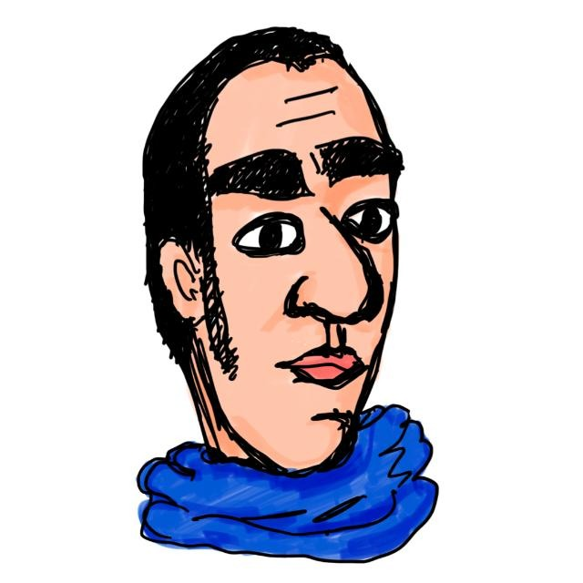

PER2A0P2S6 è un ciclo di seminari di Fisica di carattere generale desitinati a un pubblico
di una paese civile.
Si svolgono nei pomeriggi di giorni infrasettimanali nella sede di via Alessandro Pascoli del
Dipartimento di Fisica e Geologia.
Infusi e biscotti allietano e stimolano la discuissione che segue ogni presentazione.
Tutti sono invitati a proporre seminari.
Mercoledì 29 aprile 2026
Ore 15:30 - Aula B
Quantum complexity in gravity, quantum field theory and quantum information science
Stefano Baiguera
Quantum complexity quantifies the difficulty of preparing a state or implementing a unitary transformation with limited resources. Applications range from quantum computation to condensed matter physics and quantum gravity. I seek to bridge the approaches of these fields, which define and study complexity using different frameworks and tools. In this talk, I will describe several definitions of complexity, along with their key properties. In quantum information theory, I will focus on complexity growth in random quantum circuits. In quantum many-body systems and quantum field theory (QFT), I will discuss a geometric definition of complexity in terms of geodesics on the unitary group. In dynamical systems, I will explore a definition of complexity in terms of state or operator spreading. I will also outline applications to quantum many-body models, and QFTs including conformal field theories (CFTs). Finally, I will explain the proposed relationship between complexity and gravitational observables within the holographic anti-de Sitter (AdS)/CFT correspondence.
Giovedì 12 marzo 2026
Ore 16:00 - Aula B
To infinity and beyond: the hyperboloidal framework for wave equations
Rodrigo Panosso Macedo
Wave propagation and radiation are common phenomena across many areas of physics, from classical field theory to modern gravitational-wave astronomy. In this talk, I will introduce the mathematical and physical ideas behind the so-called hyperboloidal framework, a concept developed upon Penrose’s seminal work on the “Conformal Treatment of Infinity”. By exploiting spacetime’s causal structures, this framework allows us to treat distant radiation and strong-field regions within a single unified picture, providing a natural way to study waves as they propagate all the way to the infinity far wave zone.
The first part of the talk presents an overview of the conceptual foundations of hyperboloidal methods, emphasizing their geometric intuition and their advantages for analyzing wave behaviour at the wave zone. In the second part, I will illustrate how these ideas have become powerful infrastructure in black-hole perturbation theory and gravitational-wave physics, enabling new insights into phenomena such as black-hole ringdown and radiation from binaries systems. Beyond their role in general relativity, the underlying concepts offer a broader perspective on wave-like systems and may find applications across different areas of physics.
